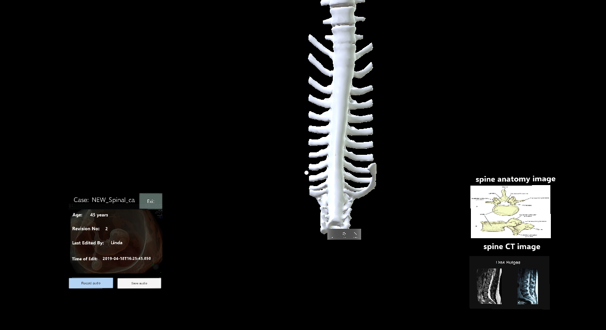

Project Development
Requirement
Research
HCI
Design
Testing
Evaluation
Management
Requirements
-
Introduction to project background and client
A medical repository which congregates patient data and allows a surgeon to send 3D models to a Hololens device. Aim - to improve the quality of surgical preparation by allowing surgeons to gain a better understanding of the task. The project we are working on is an implementation of the Holy Repository for 3D viewing on Hololens to help in surgical planning for operations. The data in surgery is required to be stored along the patient records. It should also have a feature for training aid such as annotations.
-
Project goals
- It can store multiple scans per patient case.
- It can store tags for faster indexing and searching, ultimately leading to machine learning on categories of patient cases.
- Use a button to send the scans to HoloLens.
- It is a scalable file format (More medical files can be attached (eg DICOM files).
-
Requirement gathering , requirements sealing with the client
The initial gathering of the requirements was done by meeting the previous handler of the project - Immanuel Baskaran. He provided us with the information that the client was looking for. After the initial meeting the project code was handed to us by the administrator. We then decided to meet the client who we will deliever the final product to - Shabnam Parkar. Before meeting the client we prepared some questions to ask some of them closed and other open questions. Most of the questions with answers have been listed below.
-
Persona
The Persona for our Project.
-
StoryBoards
The StoryBoards section was split into two different parts for simplicity.
- How to get access to the patient data and view on HoloLens?
- How the user will be able to view the data on the HoloLens?
-
MoSCoW Requirements
The list of the requirements that has finalised to achieve the End goals.
-
Must have
- View 3D images of the different Organs
- Able to view on HoloLens
- Show patient data alongside patient scans / 3D models
-
Should have
- Intuitive dynamic search functionality, allowing patient data to be retrieved quickly and easily
-
Could have
- Add commentary and annotations to aid trainers.
- Add annotations to the patient scans to aid trainers
- Intuitive and responsive user interface and experience
-
Must have
-
User case
Please take a look into the System Architecture on the Design Page!
Moreover to establish the user needs the potential users were surveyed.

Research
-
Review existing solutions
The exisiting solutions provide the way to view CT scans on Hololens however, they do not offer the bespoke support that GOSH DRIVE is seeking. The ability to authenticate the person, view the data of different patients, filter specific scans and so on. These features can only be implemented by having a new solution. This doesn't mean that the solutions that are out there didn't help us. We were able to look at the design of the websites or in short the conventions that were used so that the same conventions are used within our system. Also regarding the viewing of the CT scans on HoloLens we will have to make sure the steps are easy to follow. So for example, you can use a website which lets you view the data but it does not have an option to view on the Hololens.
-
Related technologies
We considered the alternative technologies that can be used instead of the HoloLens to view the 3D data.
-
Summary of final decision
There were some technologies we found that could be possibly used in place of the HoloLens as aforementioned. However, it was due to the needs of the client that the HoloLens was taken forward as the final one. This was taken by factoring in the cost, the compatibility with the previous interation and support available.
-
Technologies used in the backend
The backend is basically composed of some restful api, which uses http requests to process the data. Objects processed by those api all store in the Azure Blob DataBase, and they are actually .mhif file format. Mhif file is exactlly xml file, but follow a detemined schema to building up. Each mhif file actuallu store one patient's information , and using an unique patietnId to label each patient.Restful api could analyisi those file and extract the information according to the http request from front end.
- All the techniques in the backend
-
Why Java Jersey
Using Java Jersey to build up the Restful Service have so many advantages, for example, the consumer only needs to know the URI of the root resource of the service, then they could boot from the root resourse to the required resource.And Java Jersey uses the Annoatatin Mechanism, so all HTTP-related parameter settings are implemented using annotations(GET,POST,PUT,DELETE,etc). From @Produces(MediaType.Applications.JSON) i could return the json data to the front end, which is very convient and powerful.Also in this peoject, we need to parse xml file, in order to cooperate with DOM4J, which actually an efficient but a little bit complex xml parsing tools, java jersey could greatly reduce the complexity of the code.
-
Why DOM4J
The mechanism of DOM4J is loading the whole xml file into a document tree in memory , and each node of the tree represent one element in xml file, so it is easy to operate the whole file, it supports deletion, modification, rearrangement and other functions,so the access efficieny is high. So for filtering the data, DOM4J is one of the best choice. One of the other alternative library is SAX xml parse tools, this one is applied to large XML documents, and in this project all the mhif file are very large, so this one also could be a good choice, unfortunately, sax only supports reading with low access efficiency, so that is not easy to retrieve information by using sax.
-
Why Azure Blob Storage
Since our project is a pipeline conversion for the Hololens_App project, and that project used the azure blob storage, so we must need to use the same database. The HoloLens app has been used from the previous addition while the bugs and errors due to the version change were fixed in this iteration so it ready to deploy.
- https://www.slant.co/options/5655/alternatives/~microsoft-hololens-alternatives – for deciding alternatives
- https://www.producthunt.com/alternatives/microsoft-hololens?page=1 - for deciding alternatives
- https://www.healthimaging.com/topics/advanced-visualization/hololens-create-3d-holograms-medical-imaging
References
https://www.youtube.com/watch?v=B93TQ9wq1vM
HCI
-
Design Principles and evaluation of prototype
After gathering all the requirements from the our client , we have built up a basic prototype to show how our respository interact with users. Such prototype include the details that the users requested us along with in response to the heuristic evaluation. Since our project is actually a web app staff , so we have to design an relative simple but functional user interface for users. Our team has used two types of evaluation to make sure the prototype is evaluated from both the user and the expert perspective. The diagram below is a basic prototype of our user interface.
-
Paper sketches
Storyboards are finished by hand drawing , we focus on showing how our project work under real world case, for example , while doctors discussing how to manage the procedure of a surgery.
- How to get access to the patient data and view on HoloLens?
- How the user will be able to view the data on the HoloLens?
-
Wireframe
We used sketches to give ourselves an idea of how the design of the repository should look like at the very basic. Then the wireframes were created for the two main pages of the repository that will be used by users.
-
Final Prototype
Below are screenshots from the key pages of the final prototype. They show the webapp which has details on the patients and allows you to send the scans to the HoloLens. You also see the page where there is a model shown - it is from the hololens application that was developed in the previous iteration and has been integrated in our application.
-Paitent home page

-Paitent Data and Send to Hololens page

-In the HoloLens Application showing a modelof the Spinal.

So that was some of the screenshots of our integrated system which has been developed by using the webapp from the previous version and using the HoloLens App functions from a project that was developed separate to it. Our system is simply a integration of two.
Design
-
System architecture diagram
For the system architecture , we focus on the front end and the technology that makes it work with backend.
- The front end has been done in React which will allow the user to interact with the finished product with ease. This will also provide an way to visualise the data and to beam the 3D models on the HoloLens.
The backend will be completed in Java Enterprise which will allow features such as Pipeline conversion to be implemented.
The above figure gives you a basic level system architecute. The more detailed version can be found below which shows how technologies interact with each other.
-
Implementation of the key functionalities
This section provides a summary of the functionalities that makes the project stand out. The key functionalities include -
- Dynamic Search Bar - lets you search using tags provided in the bar and gives you results dynamically.
- Data Visualisation Grid - Shows the patient data on the webapp. The key point here is that you can change the schema of the data to be viewed in the patient file and that information can be viewed by using the same components.
- Hololens Application - Used as a addon fron a previous iteration. The implementation that was here is that the libraries needed to be imported and the code needed to be made adaptable to that by changing some lines of the code. Also the Toolkits were re-imported as they had upgraded so that was another challennge that we overcame.
Testing
-
Testing Strategy
The testing strategy we used for developing the API's for sending the data to the front end was the Test Driven development. We started out by defining the abilities of the APi's and then wrote the tests that cover those functions one by one. As one test is writen we write the code to make it pass and move on to the next test until the implementation is completed. This was sort of Unit testing as it tested each API if it has been correctly implemented. We used JUnit for this Approach.
1.Unit testing: In unit test, we test the backend by using the Junit Library and JerseyTest , ResourceConfig library, during every unit test, ResourceConfig will try to get the resources returned by the interface, and in the unit test, we compare the returned resources with our pre-set expectations. If they are equal, the interface works correctly, and then we cover as much as possible input, making the test more credible.
2.Integration testing: For integration testing, we connected the front end and backend and tested them manually to check if it gives the output we are looking for.Then we also connected it with the Hololens Application and did the integration testing using the Hololens Emulator to get the desired results.
4.Performance testing: The WebApp could dynamic search up to three conditions, so in this testing, we just test different combinations of inputs and see how it took to get the results we are looking for and if the results are correct. For example, just as a reference we sent the patient case which contains two scans to the HoloLens App and it took about 6 seconds to achieve it.
5.User acceptance testing: For this part of the project we asked some of our peers so that we are that the system is working and will be accepted by the client when we submit it on. However, this will be after this websit has been submitted.
Evaluation
-
Evaluation
- Below is shown the achievement table of the project, which also shows the completed status for the requirements.
A list of known bugs
- The posssible bug in the front end - the Send to HoloLens button does not updates the page when you click it so the user could be confused if they are not told. It is a Low priority bug.
- There are some bugs in the HoloLens App such as you will have to click twice to go back to the Home page from the List page so the App gets ready for the next patient scan. The priority is medium as it does not affect how the user gets the information.
- Below is shown the achievement table of the project, which also shows the completed status for the requirements.
- Below is the contribution table of the team members.In section below we will focus more on the critical evaluation of the project within different subsections.
- User Interface/Experience - The project have a user interface which adds beenfit to the user experience by having a easy to follow structure. The search bar is dynamic which allows you to input tags using natural language for filtering the patient list. This helps with the user experience however, the ease of learning for using tags takes some time due to the limited visibility of the tags. Together with this, the patient data cells on the patient detail screen allow for multiple data variants to be displayed. On a critical note, it is difficult to scan patient details at a first glance as all of the details blend into one arising from a lack in visual variation.
- Functionality - The front-end is low on functionality - there are few elements that the user can interact with aside from the search bar and the 'Beam to Hololens' button, while the patient detail tabs are functionally incomplete. Furthermore on the HoloLens application the model boundary box is difficult to control as a result of small control anchors.
- Stability - The webapp has a medium stability but however it could be improved by taking a more rigourous testing approach that we were not able to, due to limited time. The HoloLens Application however is stable in terms of performing the functions it does since it has been tested in the prvious iteration along by us.
- Efficiency - The webapp has near to medium efficiency if it was to be rated from low to high as the functions on the how the data is parsed by using the backend. Using XML binary format will certainly help.
- Compatibility - The front-end was developed in a modular structure to ensure that components can be altered without affecting parent components and the compatibility of the overall project. The compatablity of the HoloLens App proves to be high since it is being used with a different project this time around.
- Maintainability - Our backend uses simple modules which can be easily understood and maintained, but the front-end code lacks explainer comments and can come across as complex.
-
Future Work
- Possibly have the Meshpro app closely linked with HoloRepository.
- Use Binary XML for MHIF files for performance boosts.
-Take screenshots in the HoloLens app of a specific scan area.
- For the front-end specifically add more functionality by combining the app from the previous iteration into.
Management
-
Legal Issues
The project is the implementation of the NHS/GOSH DRIVE Holorepository with different tools for 3D viewing of models on HoloLens and storing data in cloud storage accessible anywhere. The project is from a legacy codebase which means that the project was in a partly developed stage when handed to us by the client’s team. The project involves sensitive data of patients which must be stored securely. To make sure that the data is accessed by authenticated users only, a login page layer will be put in place. With a software project involving data processing comes the liability of processing it correctly.
The end product will be used to plan patient’s surgery, so it is important that there are no defects within software for e.g. not displaying all the required details in the 3D holographic image properly. If there is such an error, then the developer could possibly be liable for that. However, since the project is only at one of its several iterations it should be thoroughly checked by the client and client’s development team using acceptance testing to look for any errors that could have a lasting impact. Therefore, as with the previous iteration there is a limitation of liability which restricts me and my team to be liable for anything excluding negligence by us. This is stated in the License of the project which limits the developer to accept any liability for the product user as a condition. This software and code are not guaranteed safe to use in a clinical or other environment and you should make your own assessment on the suitability for such use as stated in the conditions.
The intellectual property or IP allows one to protect their work and there are different types of protection properties available, for e.g., copyright and Trademarks. The types are split into two sections – automatic and manual protection, which means your work is protected automatically or not depending on what work it is. The intellectual property type for this project is the copyright which is automatic. The property is copyright because the type of work created/developed is web content. However, if the name of the project was to be registered it will be Trademark and will have to be done manually by submitting an application. The copyright property has also been specified in the License document which has a condition that a copyright notice must be given. The Holorepository for GOSH DRIVE is an open source project which means that the source code is available to everyone in the community to access. To progress with this iteration of the project, we have and will be using other open source components. To make the front end of the Holorepository, React (JavaScript library) has been used for user interface. The React library uses MIT License (more on licensing later) that’s the react code remains under MIT License but can be used in another project license. The other component that the project uses is the SMART on FHIR, an open source apps platform for electronic health records (EHR) to access data smartly. This component uses Apache License, Version 2.0 which is a permissive license and doesn’t really impose restrictions, but you must specify the license in your work.
These components have been derived into the current project. The source code agreement that is in place is Affero General Public License (AGPL) v3.0 and hence, any components used will go under this license, while anything that will be derived from this project must also be under AGPL v3.0. There are different types of source code agreement and the type used depends on how much freedom the user should be given in terms of using it, modifying, redistributing and commercial use. The License I suggest for this project is the GNU Affero General Public License v3.0 because the license gives users the freedom to use it, modify, redistribute, private and for commercial use while the work stays open source even when used as a server software. You must publish the new code under same license. The suggestion has been made because the project is being developed as an open source for the NHS and it should stay open source for the community to continue to make changes and improvements. The other important reason is that the project is being derived from legacy codebase which is licensed under AGPL v3.0, so the new project must be under same license, as well as because the software will be hosted on a server. This protects it. It shall be noted that AGPL is a strong copyleft license which gives freedom while work stays copyrighted and is also compatible with other licenses such as Apache 2.0.
The other accepted license is MIT license. This license is very simple from all and allows anyone to use the code and modify it, distribute, commercial use without disclosing the source. However, you only have to use same MIT license in place. This license is not suitable as the distributor doesn’t have to give source code under this, meaning if you want to include modifications someone has made you will not have the code. Hence, the project will benefit if it stays open source. Even the GeneralPublicLicense(GPL) is not suitable as it does not protect your work if hosted on a server. The General Data Protection Act(GDPR) which replaces the data protection act came into effect in 2018 with revised definitions. It has a huge impact on the project I am working on as it manages and processes data. The project is based on processing patient’s data which includes personal data. Therefore, the data privacy must be considered so that GDPR requirements are fulfilled. The project needs to comply with GDPR by taking several measures including by design and transparency etc. The data that’s processed shall only be the required data and processed in a lawful and fair manner. That is, if you did not say in the privacy notice you were going to do X with data then you should not do it, as the purpose of the data collected was not transparent to users. The logic of how the data is processed shall be transparent.
The data shall also be processed in a secure way and kept in identifiable form no longer than necessary. That is, there should be a retention policy so that the data is destroyed when no longer needed. The data subject should be able to erase any inaccuracies and be able handle their data of their lawful interests. The subject can claim for compensation if unauthorised disclosure, inaccurate data and for loss or destruction of data. To protect the data for this project it will be password protected and encrypted so only authorised users only have access to data with certain permissions. Since the data will be used from GOSH it will need to be transmitted in a secure way. To further comply with GDPR any breaches should be reported. -
User Manuals - please also see the videos
- User Manual - Frontend
- Technical Front end guide
- Technical Backend guide
- HoloLens_App
On your desktop/laptop, head over to https://hololens-webapp-190422163731.azurewebsites.net/#/. You will be presented with the Holorepository homepage containing a patient search bar.

The search bar acts as the primary entry point for the web app and you’ll use this to retrieve patients and filter through their details.
We developed the search bar to be dynamic, meaning natural language queries are processed and categorised in real time as you type. The filter categories include: - Gender - Male, Female.
- Age - 0-9, 10-19, 20-39, 40-59, 60-99
- Scan Type - current patient examples include Lungs, Skin, Urinary and Heart.
Simply type in your filter term and hit Enter. Results should now be visible below the search bar.

Clicking ‘View Profile’ on a patient card takes you to the patient detail screen containing key information.

The top half of the detail screen is dedicated to patient data while the lower half is reserved for a list of scans that are available to be beamed to a HoloLens.
Selecting ‘Send to HoloLens’ triggers a background method which transfers the chosen model to the device.

The model should now appear in the list of available scans on the HoloLens.
- Clone the Github repository (https://github.com/RodMatveev/UCL_GOSH_Drive_Holorepository) using ‘git clone’ and open the resultant directory.
-Make sure you have npm installed, then install the required dependencies using ‘npm install’ in the gosh-mhif-app directory.
-sStart a local development server by using the command ‘npm start’. After the process finishes you should be taken to your browser containing a localhost link to the built project.

To run the HoloLens App please unzip the project folder. Open the Solution in Visual Studio and click on Deploy to Device when your HoloLens is connected. Then within that it is easy to navigate as shown in the video.
To install the App go in UWP folder and click on Origami then on App Packages and expand the package which will prompt you to run it and then simply open it to run on HoloLens.
Our Team
COMP0016 Team 19
Rod Matveev, zcabrma@ucl.ac.uk
Lovepreet Singh, zcablsi@ucl.ac.uk
Jeff Cai, zcabtca@ucl.ac.uk